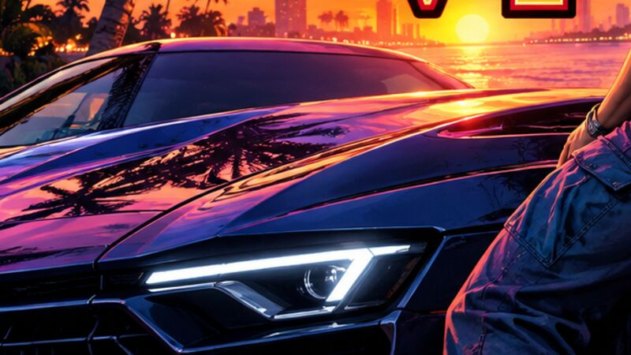
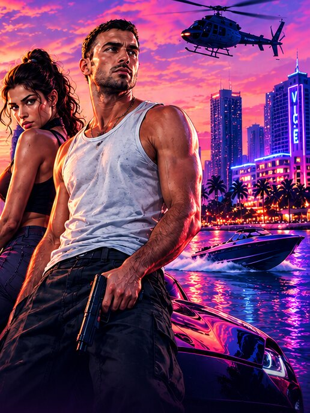

01
Sin microtransacciones ni IA generativa en la campaña
Rockstar confirmó que el modo historia no tendrá micropagos y que no usó IA generativa para crear el juego.
El regreso más esperado
Rockstar Newswire, Kotaku, GameSpot, PC Gamer, Billboard, Forbes y más.

Rockstar confirmó que el modo historia no tendrá micropagos y que no usó IA generativa para crear el juego.
Conduces como Jason y un segundo después disparas desde el copiloto como Lucia. El combate recuerda a Max Payne 3.
No habrá edición de coleccionista. Las reservas abrieron el 25 de junio con el Vintage Vice City Pack de regalo.
Ya salieron seis adelantos del álbum, con Morgan Wallen, PinkPantheress, Fred again.. y Yung Lean entre otros.
La edición física del juego será un código en caja; el álbum sí llega en CD, vinilo y una edición limitada.
El jefe de Take-Two volvió a esquivar la pregunta; por ahora el juego sigue siendo exclusivo de consolas.
El análisis de las filtraciones de agosto apunta a un posible sistema de moralidad y a un medidor de resistencia.
El «Extended Look» confirmó detalles que llevaban tiempo circulando como filtraciones.
Forbes apunta a que se habría revelado su año de lanzamiento. Rockstar solo confirma que no estará el día del estreno.
Las filtraciones y rumores no están confirmados por Rockstar Games. Cada nota enlaza a su fuente original.
Directamente del canal de YouTube de Rockstar Games.
El estado donde transcurre GTA VI, con el regreso a una Vice City moderna. Estas son las regiones que Rockstar ha presentado:
Biografías oficiales publicadas por Rockstar Games.

Su padre le enseñó a pelear en cuanto aprendió a caminar. Luchar por su familia la llevó a la Penitenciaría de Leonida y salió por pura suerte. Ahora solo quiere jugadas inteligentes y la buena vida que su madre soñaba desde Liberty City.
Quiere una vida fácil, pero todo se le complica. Creció entre estafadores y, tras pasar por el Ejército, acabó en los Keys trabajando para narcotraficantes locales. Conocer a Lucia puede ser lo mejor o lo peor que le ha pasado.